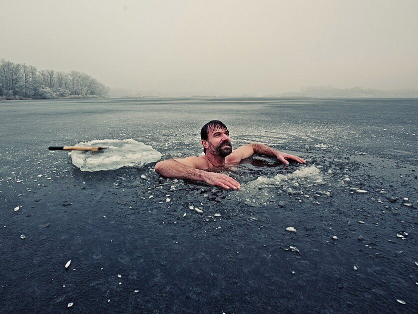
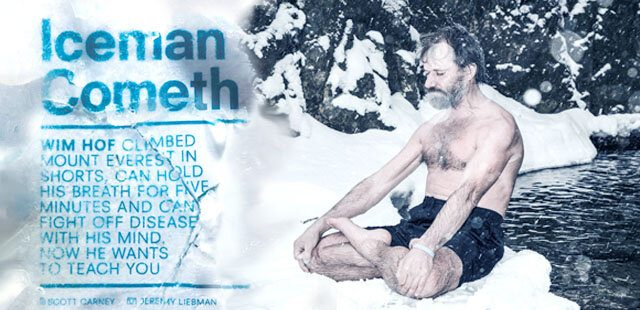
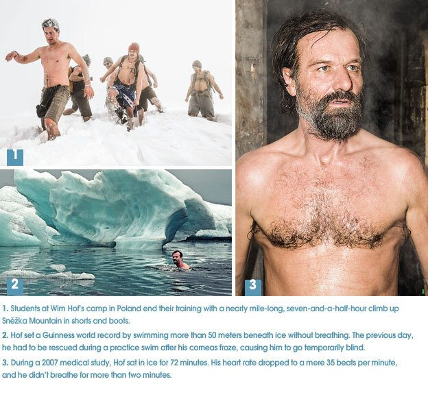

A dilapidated farmhouse in the Polish countryside creaks and groans on its foundation as six men hyperventilate inside one of its frigid rooms. The windows are caked with frost and snow piles up outside the front door. Wim Hof surveys his students with stern blue eyes as he counts their breaths. They are lying in sleeping bags and covered in blankets. Every breath they expel appears as a tiny puff of mist as the heat of their bodies crystallizes in the near-arctic air. When the students are bleached white from exhaustion, Hof commands them to let all the air out of their lungs and hold their breath until their bodies shake and shudder. I exhale all my breath into the frigid air.
“Fainting is okay,” he says. “It just means you went deep.”
Hof is one of the world’s most recognized extremophiles. In 2007 he made headlines around the world when he attempted to summit Mount Everest wearing nothing but spandex shorts and hiking boots. He has run barefoot marathons in the arctic circle and submerged his entire body beneath the ice for almost two hours. Every feat defies the boundaries of what medical science says is possible. Hof believes he is much more than a stuntman performing tricks; he thinks he has stumbled on hidden evolutionary potential locked inside every human body.
With my lungs empty and my head dizzy from hyperventilation, I note the stopwatch on my iPad as it slowly ticks by the seconds. At 30 seconds I want to let go and feel the cool air rush inside, but I hold on.
Participants have come from across Europe and America for this seven-day training program aimed at extending control over the body’s autonomic processes. The human body performs most of its daily functions on autopilot. Whether it’s regulating internal temperature, setting the steady pace of a heartbeat or rushing lymph and blood to a limb when it’s injured, the body, like a computer, uses preset responses for most external stimuli. Hof’s training aims to create a wedge between the body’s internal programming and external pressures in order to force the body to cede control to the conscious mind. He is a hacker, tweaking the body’s programming to expand its capabilities.
At 60 seconds, with empty lungs, my diaphragm begins to quiver and I have to rock back and forth to keep from gasping. Even so, my mind is strangely calm. My eyes are closed, and I see swirling red shapes behind my lids. Hof explains that the light is a window into my pituitary gland.
Hof promises he can teach people to hold their breath for five minutes and stay warm without clothes in freezing snow. With a few days of training I should be able to consciously control my immune system to ramp up against sicknesses or, if necessary, suppress it against autoimmune malfunctions such as arthritis and lupus. It’s a tall order, to be sure. The world is full of would-be gurus proffering miracle cures, and Hof’s promises sound superhuman.
The undertaking resonates with a male clientele willing to wage war on their bodies and pay $2,000 for the privilege of a weeklong program. Across the room Hans Spaan’s hands are shaking. Diagnosed with Parkinson’s 10 years ago, he had to quit his job as an IT executive, but he claims Hof’s method has enabled him to cut the amount of drugs his doctors insist he needs. Next to him, Andrew Lescelius, a Nebraskan whose asthma can be crippling, hasn’t used his inhaler for a week.

For almost an hour we’ve been cycling between hyperventilating and holding our breath. Every repetition has made it incrementally easier to hold on just a bit longer. Hof tells us the quick breathing adds oxygen to our blood supply so that, at least until we use it up, we don’t have to rely on the air in our lungs to survive. The autonomic urge to gasp for air is based on the mind’s ordinary programming: No air in the lungs means it’s time to breathe. My nervous system hasn’t yet realized there’s still air in my blood.
Ninety-two seconds and my vision starts to cloud over. The room has taken on a red sheen I don’t remember being there before. I may be seeing lights. I let go and allow air to rush in. It’s far from a record, but after only an hour of trying, it’s my longest attempt. I smile with a small sense of accomplishment.
Hof then commands us to undergo another breathing cycle, but this time, instead of holding my breath, he instructs me to do as many push-ups as I can. Raised on a diet of cheese curds and little exercise, I’m out of shape. At home I can manage an embarrassingly feeble 20 before collapsing. Now, with no air in my lungs, I push myself off the floor with almost no effort. They roll out one after another, and before I know it I’ve done 40
I decide I’m going to have to reevaluate everything I’ve ever thought about gurus. Hof is a difficult figure to dissect. On one level he speaks in a familiar creole of New Age mumbo jumbo. There’s a spiel about universal compassion and connection to divine energies. Then, of course, there are the results. His relatively simple exercises make undeniable changes in my body seemingly overnight. Following his prescriptions for a week, I hack my body to perform physical feats of endurance I didn’t think possible and earn confidence I didn’t know I had. As a bonus, I lose seven pounds of fat—which come out in oily clumps during my morning eliminations.
Our goal by the end of the week: to complete an arduous eight-hour climb up a powder-covered mountain, wearing nothing but shorts. It will be my own personal Everest, though in this case the mountain is called Sneˇzˇka. But even with these first routines in the safety of a training room, I’m not sure I’m up for it.
I am at the mercy of Hof, who wears a pointy green hat that makes him look like a life-size garden gnome. A bushy beard frames his piercing blue eyes and ruddy nose, and his body bristles with tightly corded muscles. A six-inch surgical scar across his stomach marks a time he took his training too far and ended up in the hospital. Hof is a savant and a madman. He’s a prophet and a foil. And as is occasionally the case with people who try to cultivate superpowers, Hof’s abilities have come at a heavy price.
Born in the Dutch city of Sittard in 1959, on the eve of Europe’s hippie revolution, Hof spent his early years in the middle of a working-class family of nine children. While the rest of the Hof family learned Catholic liturgy, Wim became fascinated with Eastern teachings, memorizing parts of Patanjali’s Yoga Sutras and scouring the Bhagavad Gita and Zen Buddhism for wisdom. He was keen on exploring the connections between the body and the mind, but none of what he read was quite what he was looking for.
Then, in the winter of 1979, when he was 20 years old, he was walking alone on a frosty morning in Amsterdam’s picturesque Beatrixpark when he noticed a thin skin of ice on one of the canals. He wondered what it would feel like if he jumped in. With juvenile impulsiveness he has never quite shed, he took off his clothes and plunged in naked. The shock was immediate, he says, but “the feeling wasn’t of cold; it was something like tremendous good. I was in the water only a minute, but time just slowed down. It felt like ages.” A wash of endorphins cruised through his system, and the high lasted through the afternoon. He went on to repeat the exercise every day since. “The cold is my teacher,” he says.
The breathing technique emerged naturally. He started by mimicking the rapid breaths people take instinctively when they plunge into icy water, which he says are similar to the breaths a woman takes during childbirth. In both cases the body switches to an instinctual program. When Hof dunked under the ice, he went from rapid breathing to holding his breath. That’s when he began to feel changes in his body.
The way Hof explains it, humans must have evolved with an innate ability to resist the elements. Our remote ancestors traversed icy mountains and parched deserts long before they invented the most basic footwear or animal-skin coats. While technology has made us more comfortable, the underlying biology is still there, and the key to unlocking our lost potential lies in re-creating the sorts of harsh experiences our ancestors would have faced.
Hof trained on his own in obscurity for 15 years, rarely talking about his growing abilities. His first student was his son Enahm. When Enahm was still an infant, Hof took him down to the canals and dunked him in the water like Achilles. While it’s anyone’s guess what nearby pedestrians might have thought of this sight, most of his close friends shrugged off his morning routines as just another eccentricity in an already eccentric city.
Hof did odd jobs, including working as a mail carrier, and took gigs as a canyoneering instructor in Spain during the summers. Money was always a problem, and his wife—a beautiful Basque woman named Olaya—began to show signs of a serious mental disorder. She was depressed. She heard voices. In July 1995 she jumped off the eighth floor of her parents’ apartment building in Pamplona on the first day of the Running of the Bulls.
Sitting at a handmade wooden table in what serves as lunchroom and breakfast nook in his Polish headquarters, Hof recounts Olaya’s death as tears roll freely down his cheeks. “Why would God take my wife from me?” he asks. Confronted with loss and a broken heart, he put all his faith into the one thing that set him apart from everyone else: his ability to control his body. Olaya had never shown interest in Hof’s methods, but he felt he could have done more to help her. “The inclination I have to train people now is because of my wife’s death,” says Hof. “I can bring people back to tranquility. Schizophrenia and multiple-personality disorder draw away people’s energy. My method can give them back control.” It was his call to action. But he still needed a way to announce himself to the world.
His opportunity came a few years later. As winter settled on Amsterdam, a local newspaper ran a series of articles about odd things people did in the snow. Hof called the editor and explained that for the past couple of decades he’d been skinny-dipping in icy water. The paper sent a reporter, and Hof jumped into a nearby lake he frequented. The next week a television crew showed up.
In one famous segment, Hof cut holes in the ice and jumped in while a Dutch news crew filmed. He was drying himself off when, a few meters away, a man stepped on a thin patch and fell through. Hof charged out onto the lake, jumped in a second time and dragged the man to safety. The news crew caught the exchange, and soon Hof wasn’t just a local oddity, he was a local hero. Someone dubbed him the Iceman, and the name stuck.
After that act of heroism, Hof became a household name across the Netherlands. A Dutch television program hosted by the eminent newscaster Willibrord Frequin asked Hof to perform on camera. The gimmick was to have Hof establish a Guinness world record. They planned for him to swim 50 meters beneath arctic ice without breathing. It would be sensationalist fun, but the program would air throughout Scandinavia and give Hof a shot at doing stunts for other channels around the world.
A few weeks later Hof stood on the surface of a frozen lake near the small village of Pello, Finland, a handful of miles from the arctic circle, wearing only a bathing suit. Although the temperature would drop to minus 12 degrees Fahrenheit, his skin glistened with sweat. Below him a diamond-shape hole shot down a meter through the ice. There were two other holes 25 and 50 meters from the first. A camera crew watched as Hof descended and dipped his toe in the periwinkle waters.
On the first day of shooting he was supposed to swim only to the first hole so the crew could get the right shots and feel comfortable with the safety setup. But Hof had other plans. He wanted to surprise and impress the crew by clearing the whole distance in one go. He had done his calculations in advance. One stroke took him one meter, so he would need to do 50 to reach his destination. Taking a giant gulp of air into his lungs, Hof disappeared and began his sprint.

He later recalled that he opened his eyes midway between the first and second hole and could make out a beam of sunlight slicing through the water. But at stroke 29, with the safety of the first hole and rescue team behind him, something went wrong. He hadn’t anticipated what the cold water would do to his eyes. His corneas began to freeze over, and crystallization blurred his vision. Five strokes later he was blind, with only his stroke count to direct him to oxygen. Soon he was off course. At 50 strokes he grabbed around in vain for the rim of the second hole. He turned around thinking maybe he had passed it. He wanted to gasp for air but knew the results would be fatal. At 65 strokes his hope was beginning to fade. Seventy strokes in, just as he began to lose consciousness, he felt a hand wrap around his ankle. A safety diver dragged him to the surface. He knew he had almost died and that his hubris had led him there. Despite that close call, the next day he would set a world record, with the cameras rolling.
The show went on to be a hit and secured him a series of similar on-air stunts for international channels from Discovery to National Geographic. But success came at a price. Although he was capable of incredible feats, Hof’s desire to impress and please the people around him would time and again lead him into near-fatal situations. Should he die, the world might never understand how he had achieved his dramatic results. Hof needed a better plan.
To understand Hof’s abilities, I board a plane from Los Angeles to Wrocaw, Poland, where he meets me at the terminal gate with a broad smile. Hof decided to make his headquarters here instead of the Netherlands so he could be close to icy streams and snow-covered mountains—and also take advantage of the weaker economy to purchase a larger space. We pile into a tiny gray Volkswagen with two other devotees—a Croatian and a Latvian—who have come to study his technique, and we traverse miles of Polish pines and picturesque villages toward Hof’s rural headquarters.
Janis Kuze sits crammed next to me with my hiking backpack overflowing onto his lap. The burly Latvian grew up amid the turmoil of a collapsing Soviet Union, when bandits roamed the countryside. His father stashed a loaded AK-47 beneath his son’s bed so it was never more than an instant away should they need to defend themselves. Now Kuze studies the Israeli combat system Krav Maga in his spare time and spars with his equally intimidating and, he assures me, beautiful girlfriend. Asked if he’s ready to immerse himself in ice water, he replies, “When my father was in the special forces, they tested soldiers’ ability to adapt by making them sit in ice water. If they survived, they passed. Not everyone passed.”
We arrive in the tiny village of Przesieka, where Hof owns an isolated farmhouse he was able to purchase after signing a sponsorship deal with Columbia Sportswear to shill a line of battery-heated jackets in 2011. In the commercials, which were created for TV but thrived on the internet, Hof swims in a frozen lake while giving icy stares to toasty outdoorsmen who use the high-tech gear to warm themselves with the touch of a button. The videos went viral, and commenters compared Hof to Chuck Norris, propelling him to a sort of internet alpha-male celebrity. But the condition of the house confirms that web fame does not necessarily translate to riches. The space is a permanent work in progress, with an assortment of bunk beds and yoga mats. A busted sauna sits next door to its new replacement. The coal furnace doesn’t quite work and spews black smoke through cracks in the floorboards. Most of the floors don’t seem level.
The crumbling building is headquarters for Hof’s growing global presence as a New Age guru and ground zero for the experimental training regimens he’s developing. One of Hof’s first students at the house, Justin Rosales, now 25, flew here from Pennsylvania in 2010 to serve as a guinea pig. “If we want to become strong, passionate and motivated, we have to take on seemingly impossible tasks. Without an open mind, the cold will never be your friend,” Rosales tells me over e-mail. He has written a book with Hof about the experience, called Becoming the Iceman, which is often passed among devotees interested in cultivating superpowers.
I stash what little winter gear I’ve brought beneath a bunk on the second floor and look out the window onto a snowy field that serves as the main training site. Andrew Lescelius, the wiry asthmatic Nebraskan who arrived a week earlier, crosses the field outside clad only in black underwear, stopping to pick up handfuls of snow and rub them over his arms and chest. Steam erupts off his body in great clouds.
Kuze chooses a bunk next to mine and looks eager to get out into the snow. I let him go on his own. I will have plenty of opportunities to be cold when training begins tomorrow.
After a restless night we meet Hof in the yoga studio. He explains that every training program he runs is different, and the method varies depending on the constitution of the group. But no matter how it starts, the building blocks are simple and, he assures us, our progress will be rapid. “This week we will win the war on bacteria!” he proclaims before warning us he will challenge everything we think about the limits of our body.
At one point Hof tells us to shed our clothing and head outside. We round the farmhouse to a small snowy field frequented by deer and the curious gazes of inquisitive neighbors. As we file past, one of them yells something to us in Polish and Hof chuckles. Most people here think he’s crazy, if affable.
It’s the first time in my life I’ve put my feet directly onto snow, and they feel as sensitive as a newly broken tooth. My heart rate jumps. Kuze lets out a gasp and Hof beams a trickster smile. We stand in a circle and take low horse stances.
We try to focus on our foreheads and simply endure the cold, our chests bare to the air. Five minutes is excruciating, but Hof has us stand for six before sending us numbly into the sauna.
But with numb limbs, going from ice to a 100-plus-degree room is a mistake. The body’s natural reaction to cold is self-preservation. To keep the core warm, the muscles that control arteries clench tightly and restrict the flow of blood only to vital areas in a process known as vasoconstriction. This is why frostbite starts in the extremities. The sudden change to heat has the opposite effect. Veins suddenly pop open and send warm blood rushing through cold areas. The pain is even worse than when we were standing in the snow, something I didn’t think possible.
Kuze stretches his feet toward a box of coals and says he may cry. Lescelius clenches his teeth and holds his breath. A side effect of asthma, he tells me, is poor circulation, and the sensation of vasoconstriction is even more painful. “But I like to think of it as lifting weights for the circulatory system,” he says. Hof nods at the statement. After years of exposing himself to the cold, he can consciously restrict the flow of blood in his body and effectively send it to any part he wants.
Although the first day of exercises is painful and exhausting, true to Hof’s word our progress is rapid. The next day we stand in the snow for 15 minutes before the same feeling of panic sets in. In the afternoon we take a brief dip in the basin of an ice-cold waterfall. It is an experience not unlike walking across a bed of hot coals—a trial by fire but with ice. With every attempt, the barriers we’ve built in our heads about the cold seem to recede.
By the fourth day, standing in the snow is barely a challenge. An hour passes by quicker than five minutes had just days earlier. In the evening we sit on snow-covered rocks by a stream until they’re warm, Hof smiling over us.
•
What we know about how the human body reacts to cold comes mostly from gruesomely accurate studies that emerged from the Dachau death camp. Nazis tracked Jewish prisoners’ core temperatures as they died in ice water. As terrible as they are, these morally compromised studies helped doctors understand how quickly the body loses heat in such conditions. Sitting in 32-degree water, humans begin to feel sluggish after only a minute or two. By 15 minutes most people fall unconscious. They die between 15 and 45 minutes. When the core body temperature falls below 82 degrees, death is almost inevitable. Measured against that data set, Hof seems to perform miracles.
In 2007 at the Feinstein Institute on Long Island, Kenneth Kamler, a world-renowned expedition doctor who has worked on Everest, observed an experiment in which Hof was connected to heart and blood monitors and immersed in ice. At first the experiment hit a major snag. The standard hospital devices that track respiration declared him dead after he’d been in the ice only two minutes. The machine got confused because he didn’t take a breath for more than two minutes and his resting heart rate was a mere 35 beats per minute. He wasn’t dead, though, and Kamler had to disconnect the device to continue. Hof stayed in the ice for 72 minutes. The results were astounding. Hof’s core temperature initially declined a few degrees but then rose again. It was the first scientific validation of Hof’s method. It was becoming clear that Hof could consciously affect his autonomic nervous system to increase his core temperature. “Exactly how you explain it depends on the kind of philosophy you want to believe in,” says Kamler, who references similar feats called tummo performed by Tibetan monks. Ultimately, he says, it boils down to how Hof uses his brain. “The brain uses a lot of energy on higher functions that are not essential to survival. By focusing his mind he can channel that energy to generate body heat,” he speculates.
Interest among scientists snowballed in 2008 just as it had in the mass media more than a decade earlier. At Maastricht University researchers wondered if Hof’s abilities stemmed from a high concentration of mitochondria-rich brown adipose tissue, also known as brown fat. This little-understood tissue can rapidly heat the body when metabolized; it is what allows infants not to succumb to cold in their earliest moments. Usually brown fat mostly disappears by early childhood, but evolutionary biologists believe that early humans may have carried higher concentrations of it to resist extreme environments. The scientists learned that Hof, now 55, had extremely high concentrations—enough to produce five times more energy than the typical 20-year-old—most likely because he repeatedly exposed himself to cold.
Brown fat may be the missing organic structure that separates humans from the natural world. White fat stores caloric energy from food, which the body tends to burn only as a last resort. In fact, it’s difficult to burn the spare tire off your waistline because the body is programmed to store energy: It will burn muscle before it uses white fat to create heat or energy. Brown fat is different. Most people create it automatically when they’re in cold environments—the body detects physical extremes and starts to store mitochondria. The way Hof describes it, when brown fat is activated, the mitochondria enter the bloodstream and metabolize white fat directly to generate heat. Because most people do everything they can to avoid environmental extremes, they never build up brown fat at all. If we lived without clothing, the way our distant ancestors must have, we would have relied on the internal properties of brown fat to keep us alive.
As we sit in the sauna, I ask Hof how someone activates brown fat consciously. Instead of explaining, he tries to demonstrate. He clenches the muscles in his body in sequence, from his rectum to his shoulders, as if pushing something up from below. Then he furrows his brow and squinches down his neck as though trapping that energy in a point that he says is behind his ear. The process turns his skin bright red as if he were catching fire. Suddenly he kicks out his leg, falls against the wall and gasps. “Oh my God,” he says, dazed. In his eagerness to teach, he didn’t calculate the heat of the sauna. He almost blew a fuse. He lurches out of the sauna and rolls in the snow outside. He returns with an embarrassed smirk. “That’s how you do it. But try it only in the cold.”
•
Hans Spaan, who was diagnosed with Parkinson’s disease in 2004, credits Hof with saving his life. “With this disease,” he says, “most people have to take more and more drugs just to maintain the same level of mobility and quality of life, and eventually you max out and begin the long decline.” Spaan is trying to manage his drug regime by accompanying it with the breathing technique and ice-cold showers. He tracks his drug use on spreadsheets and claims to be on far fewer drugs now than when he was first diagnosed. He credits Hof with keeping him out of a wheelchair. Although the anecdotal evidence is encouraging, it’s hard to determine how much of Hof’s abilities can be chalked up to the placebo effect. Since Hof claims to be able to control his autonomic nervous system—the system affected by Parkinson’s—it is important to have scientific backing.
Peter Pickkers is just about the last scientist who would be swayed by outlandish claims. An expert on sepsis and infection at Radboud University Medical Center in the Netherlands, he specializes in studies that look at responses of the immune system in humans. In 2010 Hof contacted Pickkers, saying he could suppress or ramp up his immune system at will. The feat is, by definition, almost impossible. But Pickkers, who had watched Hof’s career rise on TV, was curious.
Pickkers devised a test in which he administered endotoxin, a component of E. coli bacteria the body thinks is dangerous but is actually inert. A previous trial Pickkers pioneered proved that 99 percent of healthy people who come in contact with endotoxin react as though they have the flu before the body realizes it has been duped and goes back to normal.
While Hof meditated, Pickkers injected him with the endotoxin. The results were unheard of. “Wim had done things that, if you had asked me prior to the experiment, I would not have thought possible,” Pickkers told me. Whereas almost every other person dosed with endotoxin experienced severe side effects, Hof had nothing more than a minor headache. Blood tests showed he had much higher levels of cortisol—a hormone usually released only during times of extreme stress, sort of like adrenaline—than had been previously recorded. Also, blood drawn while he was meditating remained resistant to endotoxin for six days after it had left his body.
Hof is unambiguous about what he thinks of the results: “If I can show that I can consciously affect my immune system, we will have to rewrite all the medical books.” But Pickkers and much of the rest of the scientific community are more reserved. While the results show an unprecedented response to endotoxin, there is no proof that Hof is anything more than a genetic anomaly. However, the results were promising enough for Pickkers and his colleague Matthijs Kox to commission a second study, this time with Hof guiding a group of college students through the same basic course I took to learn his technique before being injected with endotoxin. If his technique proves to be teachable, then the ground may begin to shift under Pickkers’s feet.
In April 2013, just after I was there, 12 students flew to Poland. Pickkers and Kox remained tight-lipped about the results while the journal article wended its way though the peer-review process, but they’ve issued a press release saying “the trained men produced fewer inflammatory proteins and suffered far less from flu-like symptoms.” Hof is ebullient. In several conversations he tells me that his students were able to master convulsions and fever responses within 15 minutes. Whether he is exaggerating or not remains to be seen, but if the results mirror the 2010 study Pickkers published, Hof will be a certified medical marvel.
•
All I can definitively report is my experience in Poland. I still have my challenge to complete: Despite my progress, I’m not sure I am up for the grueling bare-chested hike straight up a mountain. Sneˇzˇka Mountain straddles the Polish-Czech border and is battered by icy winds throughout the winter months. At its 5,260-foot summit, frequented mostly by intrepid cross-country skiers who hike up from a ski lift, a lonely observatory records the movements of the stars. Starting at the base of the mountain, Hof, myself and three other disciples begin the arduous climb through two feet of fresh powder. Seconds after we pile out of Hof’s dilapidated Volkswagen van, the cold slices through our winter coats like a knife. At 25 degrees Fahrenheit even modest breezes feel excruciating. In the parking lot, skiers clad head to toe in colorful Gore-Tex ensembles wrestle with their gear and trek slowly to the chairlifts.
Hof leads us to a side trail that snakes through parkland to the summit. Ten minutes up the trail, after our bodies have had time to build some internal heat, we start stripping off layers. Ashley Johnson, a former English hooligan who has found new direction in life doing work around Hof’s house in exchange for lessons, slaps Lescelius and Kuze on the back in camaraderie. Bare to the cold, we stash our clothes in a backpack and crunch forward through powder.
The moment I take off my shirt it begins to make some sense how our primordial ancestors survived. Trudging forward I don’t feel the bite of the cold the way I used to. Whatever heat I build up through exertion seems to stay in my skin as if I were wearing a wet suit. I can feel the sting of cold on my skin, but I focus on the point behind my ears that Hof said would help activate my brown fat and send waves of heat through my body.
Then I try to imitate what I witnessed Hof do in the sauna. With my muscles clenched, mind focused, it isn’t long before I am sweating. A thin steamy mist wafts upward from our group. A skier stops to take pictures. A ski patrolman on a snowmobile stops to see if we are okay. A snowboarder lets out a shocked cry and speeds by. Together we plod forward to the summit.
There is a parallel to walking across a bed of hot coals. The temperature is subservient to the task ahead. Six hours later I am nearing the summit, bare-chested and with my legs caked in snow. I have gone from California palm trees to Poland’s snowy peaks in seven days and feel perfectly warm—hot, even.
The trek takes more than seven hours, and every step upward leaves us more exposed than before. The outside temperature drops to eight degrees. About 300 feet shy of the summit, something changes. My core temperature is fine, but the wind has intensified and the incline has gotten steeper. Every step feels harder than the one before, and I am beginning to tire. We are seven hours into the ascent, and I have given my backpack to the younger, fitter Johnson. I worry what would happen to me if I stopped. Would the cold break through the mental barrier I’ve erected and send me cascading into hypothermia? Fear, more than anything else, keeps me walking. Twenty minutes later I reach the summit. I’m not cold but more tired than I can ever remember being before. After taking a couple of photos we walk into the observatory to warm up.
Just like entering the sauna after standing on ice, the warm air hits me and I feel cold. I shed my mental armor and feel ice leak into my bloodstream. I begin to rely on my environment rather than my mind to keep me warm. I shiver, and then I begin to shake. My teeth clatter. I have never been this cold before. It is an hour until I feel ready to get back on my feet for the climb down the mountain. This time, though, I wear a black peacoat that I brought up in a backpack.
Hof plans to attempt to summit Mount Everest soon. It will be his second time after an earlier, aborted, nearly naked attempt. I ask Hof what he thinks would happen if he finally meets his limits on this climb and joins the hundreds who have died on the mountain. Would his message be lost to time? Would even the modest lessons he has been able to give to his flock mean anything if he dies in a way most people would deem foolish? His face grows dark at the thought. He tells me he might cry. “I must not die,” he says. “I’ve decided.”
This article first appeared in Playboy.
Want to read more? Check out the book What Doesn’t Kill Us. Available everywhere.
Amazon | Barnes and Noble | Books-a-Million | Apple | Indie Bound